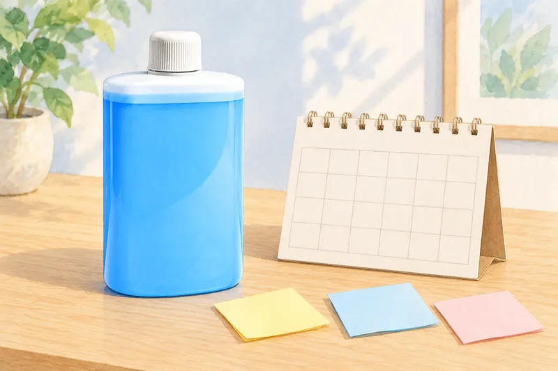

로보락 (Roborock)
로보락 세제 리필 시점 기록하기, 한 병 사용 기간을 고정하기 어려운 이유
글·구성: 제이상점 · 기종별 소모품 규격 요약본 (상세 사진과 관리 전문은 아래 네이버 블로그 모바일 원문에서 확인하실 수 있습니다.)

핵심 관리 · 선택 체크포인트
- 판매자 안내｜제이상점이 제조사 공식 자료와 현재 자사 상품 정보를 조사해 직접 작성했습니다.
- 로보락 세제 1L 한 병이면 몇 달 사용할 수 있을까요?
- 현재 상품의 병 형태를 참고해 달력과 빈 메모를 함께 놓은 구성 예시입니다.
- 한 번 보충한 뒤 다음 보충까지 지난 날짜를 알아도 곧바로 “한 병 수명”이라고 부르기는 어렵습니다.
- 공식 S10 MaxV Ultra 한국 FAQ Q6는 내장 카트리지에 로보락 전용 세정제를 원액으로 넣는 방식을 안내합니다.
부품 규격 · 점검 기준표
| 날짜와 사건 | 그때 적을 내용 | 이 기록만으로 알 수 없는 것 |
|---|---|---|
| 처음 기록한 날 | 전체 모델명·세제 제품명·기존 잔량 상태 | 이전부터 남아 있던 양의 정확한 수치 |
| 카트리지 등을 보충한 날 | 투입 위치·확인 가능한 보충량·남은 병 | 병 한 개가 모두 소진되었는지 |
| 청소를 쉬거나 조건이 달라진 날 | 휴지 기간·청소 구역·작업 설정의 변화 | 같은 날짜 수에 같은 양을 썼는지 |
| 원래 병이 비어 교체한 날 | 어느 병이 끝났는지·기록 누락 여부 | 다음 병도 같은 기간에 소진될지 |
자주 묻는 질문 (FAQ)
Q. S10MaxVUltra의 처음 기록한 날 규격과 관리 기준은 무엇인가요?
A. 전체 모델명·세제 제품명·기존 잔량 상태 규격을 사용하며, 이전부터 남아 있던 양의 정확한 수치 기준으로 점검·교체하면 청소 효율을 안정적으로 유지할 수 있습니다.
Q. S10MaxVUltra의 카트리지 등을 보충한 날 규격과 관리 기준은 무엇인가요?
A. 투입 위치·확인 가능한 보충량·남은 병 규격을 사용하며, 병 한 개가 모두 소진되었는지 기준으로 점검·교체하면 청소 효율을 안정적으로 유지할 수 있습니다.
Q. S10MaxVUltra의 청소를 쉬거나 조건이 달라진 날 규격과 관리 기준은 무엇인가요?
A. 휴지 기간·청소 구역·작업 설정의 변화 규격을 사용하며, 같은 날짜 수에 같은 양을 썼는지 기준으로 점검·교체하면 청소 효율을 안정적으로 유지할 수 있습니다.